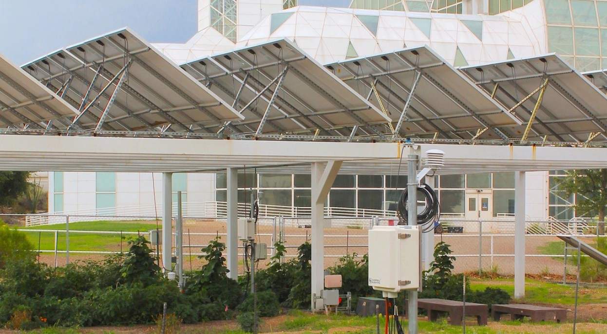
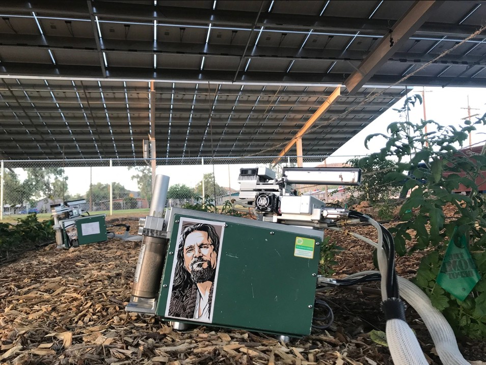
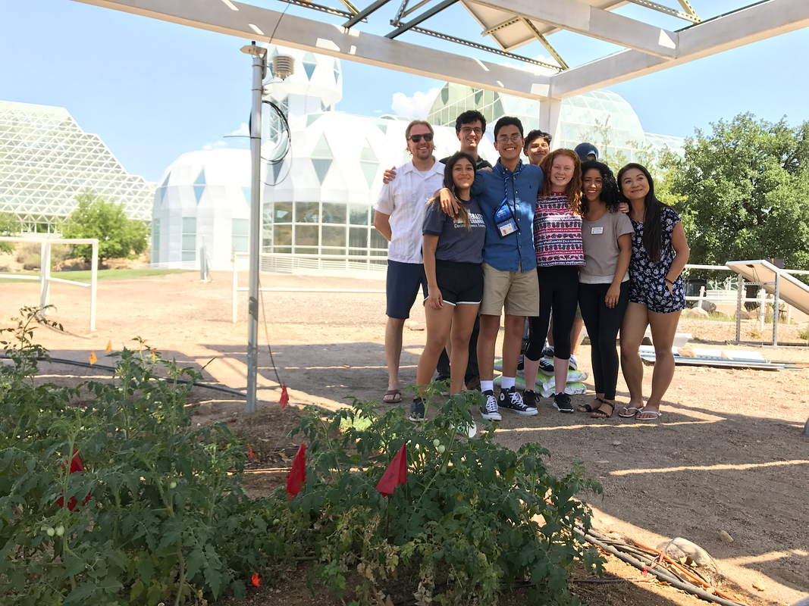
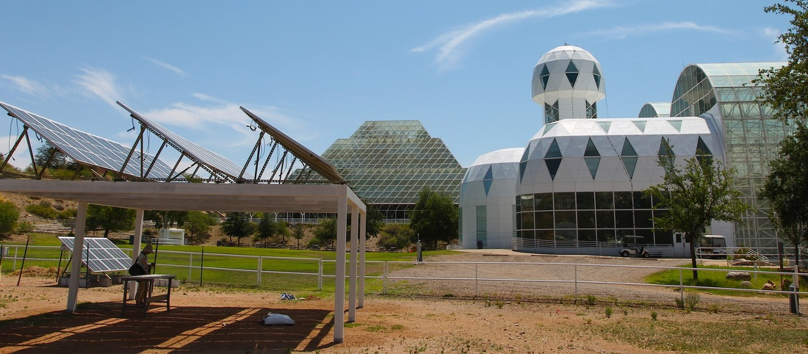
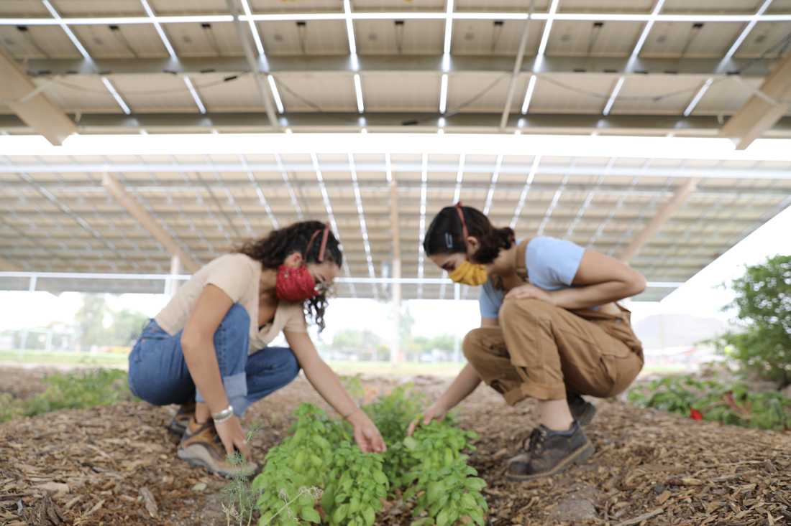
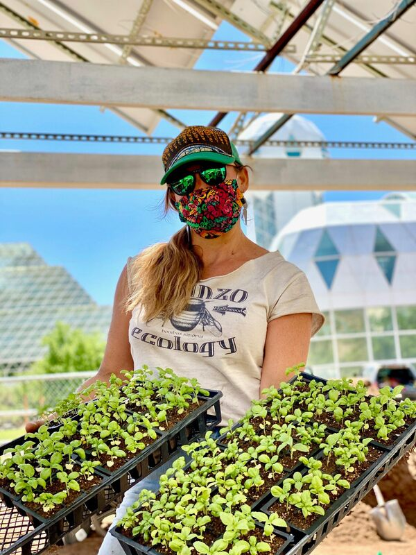

Agrivoltaics
Food, water, and energy research exploring the synergies between solar energy generation and agricultural production in water-limited environments.

Resilience Solutions
Biosphere 2 supports food, water, and energy research as part of its mission to develop scalable resilience solutions. Our agrivoltaics research explores the synergies between solar energy generation and agricultural production — a critical intersection for the water-limited American Southwest and arid regions worldwide.
By co-locating photovoltaic panels with crops, researchers study how partial shade affects plant water use, crop yield, and panel efficiency simultaneously. The result is data-driven insight into how drylands can produce both food and clean energy on the same acre.
What We Study
Microclimate Engineering
How panel shading creates microclimates that reduce heat stress on crops while cooling panels to boost electrical output — a rare true win-win.
Water Use Efficiency
Measuring evapotranspiration under partial shade to quantify water savings for crops like tomatoes, peppers, and dryland staples.
Crop Selection
Identifying crop varieties and cultivars best suited to agrivoltaic systems — balancing shade tolerance with market value.
System Modeling
Integrating field data into predictive models that inform policy and deployment across the Southwest and global drylands.
Scaling Resilience Across Drylands
Agrivoltaics represents one of the most promising strategies for sustaining food and energy production in arid regions facing intensifying drought. Biosphere 2's research feeds directly into deployment decisions being made today by utilities, tribal nations, and agricultural districts across the Southwest.
As a user facility, we actively accept proposals for agrivoltaics research. Interested researchers should review the user facility information and submit a research interest form.
Facility Highlights




Propose Agrivoltaics Research
Biosphere 2's agrivoltaics infrastructure is available to researchers studying food-energy-water nexus challenges. Submissions are reviewed through the competitive user facility proposal process.